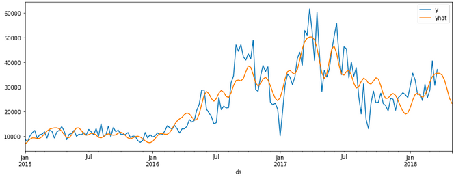
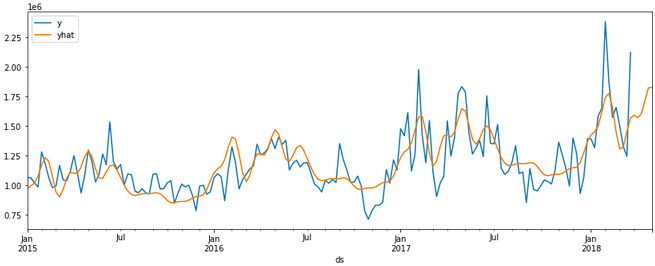

2023 10 13 spark prophet

In this notebook, we look at how to use a popular machine learning library prophet with pyspark. pyspark itself does not contain such an additive regression model, however we can utilise user defined functions (UDF), which allows us to use different functionality that is not available in pyspark.
Background
❯❯ Prophet
Prophet is a time series forecasting model. It is based on an additive regression model that takes into account trends, seasonality, and holidays. Prophet also allows for the inclusion of external regressors and can handle missing data and outliers. It uses Bayesian inference to estimate the parameters of the model and provides uncertainty intervals for the forecasts.
❯❯ UDF
Pandas UDFs (User-Defined Functions) allow you to apply a Python function that operates on pandas data frames to Spark data frames. This allows you to leverage the power of pandas, which is a popular data manipulation library in Python, in your PySpark applications. Pandas UDFs can take one or more input columns and return one or more output columns, which can be of any data type supported by Spark. With Pandas UDFs, you can perform complex data manipulations that are not possible using built-in Spark SQL functions.
❯❯ Avocado Price Prediction
Avocado price prediction is the process of using machine learning algorithms to forecast the future prices of avocados based on historical data and other relevant factors such as weather patterns, consumer demand, and supply chain disruptions. This can help stakeholders in the avocado industry make informed decisions about when and where to sell their avocados, as well as how much to charge for them. Avocado price prediction can also provide insights into the factors that affect avocado sales and help optimize the industry's efficiency and profitability.
❯❯ Objective
Having done some posts on pyspark, it seems like a very intuitive library to use
The Dataset
It is a well known fact that Millenials LOVE Avocado Toast. It's also a well known fact that all Millenials live in their parents basements.Clearly, they aren't buying home because they are buying too much Avocado Toast! But maybe there's hope… if a Millenial could find a city with cheap avocados, they could live out the Millenial American Dream.
The dataset can be found on Kaggle & its original source found here
❯❯ Loading data
To load the data, we start a spark session on local
! pip install pyspark
from pyspark.sql import SparkSession
import pyspark.sql.functions as f
import pandas as pd
# Start spark session
spark = SparkSession.builder\
.master("local")\
.appName("prophet")\
.getOrCreate()
To read the data, we'll use the session.read.csv, together with inferSchema method and look at the table schematics using printSchema() method to automatically assign types to table columns
# read csv
sales = spark.read.csv('/kaggle/input/avocado-prices/avocado.csv',header=True,inferSchema=True)
sales.printSchema()
root
|-- _c0: integer (nullable = true)
|-- Date: date (nullable = true)
|-- AveragePrice: double (nullable = true)
|-- Total Volume: double (nullable = true)
|-- 4046: double (nullable = true)
|-- 4225: double (nullable = true)
|-- 4770: double (nullable = true)
|-- Total Bags: double (nullable = true)
|-- Small Bags: double (nullable = true)
|-- Large Bags: double (nullable = true)
|-- XLarge Bags: double (nullable = true)
|-- type: string (nullable = true)
|-- year: integer (nullable = true)
|-- region: string (nullable = true)
Exploring Data
Having loaded our data, we sure can do some data exploration, first lets take a peek at our dataset, we'll use select,orderBy & show methods
sales.select('Date','type','Total Volume','region')\
.orderBy('Date')\
.show(5)
+----------+------------+------------+----------------+
| Date| type|Total Volume| region|
+----------+------------+------------+----------------+
|2015-01-04|conventional| 116253.44|BuffaloRochester|
|2015-01-04|conventional| 158638.04| Columbus|
|2015-01-04|conventional| 5777334.9| California|
|2015-01-04|conventional| 435021.49| Atlanta|
|2015-01-04|conventional| 166006.29| Charlotte|
+----------+------------+------------+----------------+
The Date unique values can be called and checked, we have weekly data for different regions
sales.select(col('Date')).distinct().orderBy('Date').show(5)
+----------+
| Date|
+----------+
|2015-01-04|
|2015-01-11|
|2015-01-18|
|2015-01-25|
|2015-02-01|
+----------+
only showing top 5 rows
We will be using Total Volume as our target variable we'll be predicting. We also can note that we have different types type of avocados (organic and conventional)
sales.select(col('type')).distinct().show()
+------------+
| type|
+------------+
| organic|
|conventional|
+------------+
So what we'll be doing is creating a model to predict the sales for both of these types, which is something we'll need to incorporate into our UDF
We can also check the region limits for Total Volume, we can do this by using agg method with the groupby dataframe type (pyspark.sql.group.GroupedData):
# min and maximum of sale volume
sales.groupby('region').agg(f.max('Total Volume')).show() # get max of column
sales.groupby('region').agg(f.min('Total Volume')).show() # get min of column
+------------------+-----------------+
| region|max(Total Volume)|
+------------------+-----------------+
| PhoenixTucson| 2200550.27|
| GrandRapids| 408921.57|
| SouthCarolina| 706098.15|
| TotalUS| 6.250564652E7|
| WestTexNewMexico| 1637554.42|
| Louisville| 169828.77|
| Philadelphia| 819224.3|
| Sacramento| 862337.1|
| DallasFtWorth| 1885401.44|
| Indianapolis| 335442.41|
| LasVegas| 680234.93|
| Nashville| 391780.25|
| GreatLakes| 7094764.73|
| Detroit| 880540.45|
| Albany| 216738.47|
| Portland| 1189151.17|
| CincinnatiDayton| 538518.77|
| SanDiego| 917660.79|
| Boise| 136377.55|
|HarrisburgScranton| 395673.05|
+------------------+-----------------+
only showing top 20 rows
+------------------+-----------------+
| region|min(Total Volume)|
+------------------+-----------------+
| PhoenixTucson| 4881.79|
| GrandRapids| 683.76|
| SouthCarolina| 2304.3|
| TotalUS| 501814.87|
| WestTexNewMexico| 4582.72|
| Louisville| 862.59|
| Philadelphia| 1699.0|
| Sacramento| 3562.52|
| DallasFtWorth| 6568.67|
| Indianapolis| 964.25|
| LasVegas| 2988.4|
| Nashville| 2892.29|
| GreatLakes| 56569.37|
| Detroit| 4973.92|
| Albany| 774.2|
| Portland| 7136.88|
| CincinnatiDayton| 6349.77|
| SanDiego| 5564.87|
| Boise| 562.64|
|HarrisburgScranton| 971.81|
+------------------+-----------------+
only showing top 20 rows
We can note that we have data for not only the different regions, but also for the entire country TotalUS. Also interesting to note is that the difference in max and min values is quite high.
Let's find the locations (region) with the highest total volumes
from pyspark.sql.functions import desc,col
by_volume = sales.orderBy(desc("Total Volume"))\
.where(col('region') != 'TotalUS')
by_volume.show(5)
+---+----------+------------+-------------+----------+----------+---------+----------+----------+----------+-----------+------------+----+----------+
|_c0| Date|AveragePrice| Total Volume| 4046| 4225| 4770|Total Bags|Small Bags|Large Bags|XLarge Bags| type|year| region|
+---+----------+------------+-------------+----------+----------+---------+----------+----------+----------+-----------+------------+----+----------+
| 47|2017-02-05| 0.66|1.127474911E7|4377537.67|2558039.85|193764.89| 4145406.7|2508731.79|1627453.06| 9221.85|conventional|2017| West|
| 47|2017-02-05| 0.67|1.121359629E7|3986429.59|3550403.07|214137.93| 3462625.7|3403581.49| 7838.83| 51205.38|conventional|2017|California|
| 7|2018-02-04| 0.8|1.089467777E7|4473811.63|4097591.67|146357.78|2176916.69|2072477.62| 34196.27| 70242.8|conventional|2018|California|
| 7|2018-02-04| 0.83|1.056505641E7|3121272.58|3294335.87|142553.21|4006894.75|1151399.33|2838239.39| 17256.03|conventional|2018| West|
| 46|2016-02-07| 0.7|1.036169817E7|2930343.28|3950852.38| 424389.6|3056112.91|2693843.02| 344774.59| 17495.3|conventional|2016|California|
+---+----------+------------+-------------+----------+----------+---------+----------+----------+----------+-----------+------------+----+----------+
only showing top 5 rows
We can note that California & West regions have had the highest values for Total Volume on 2017-02-05
Its also interest to note the difference in Total Volume for both types of avocado, so lets check that, lets just check the difference in max values
by_volume.groupby('type').agg(f.max('Total Volume')).show()
+------------+-----------------+
| type|max(Total Volume)|
+------------+-----------------+
| organic| 793464.77|
|conventional| 1.127474911E7|
+------------+-----------------+
So we can note that tehre is a significant diffence in Total Volume, let's also check when this actually occured:
by_volume.filter(f.col('Total Volume') == 1.127474911E7).show()
by_volume.filter(f.col('Total Volume') == 793464.77).show()
+---+----------+------------+-------------+----------+----------+---------+----------+----------+----------+-----------+------------+----+------+
|_c0| Date|AveragePrice| Total Volume| 4046| 4225| 4770|Total Bags|Small Bags|Large Bags|XLarge Bags| type|year|region|
+---+----------+------------+-------------+----------+----------+---------+----------+----------+----------+-----------+------------+----+------+
| 47|2017-02-05| 0.66|1.127474911E7|4377537.67|2558039.85|193764.89| 4145406.7|2508731.79|1627453.06| 9221.85|conventional|2017| West|
+---+----------+------------+-------------+----------+----------+---------+----------+----------+----------+-----------+------------+----+------+
+---+----------+------------+------------+--------+---------+-----+----------+----------+----------+-----------+-------+----+---------+
|_c0| Date|AveragePrice|Total Volume| 4046| 4225| 4770|Total Bags|Small Bags|Large Bags|XLarge Bags| type|year| region|
+---+----------+------------+------------+--------+---------+-----+----------+----------+----------+-----------+-------+----+---------+
| 5|2018-02-18| 1.39| 793464.77|150620.0|425616.86|874.9| 216353.01| 197949.51| 18403.5| 0.0|organic|2018|Northeast|
+---+----------+------------+------------+--------+---------+-----+----------+----------+----------+-----------+-------+----+---------+
Let's also check how many regions there actually are:
sales.select('region').distinct().count()
54
Which is interesting as there are only 50 states in the US, so perhaps west is a summation for all states on the west coast, lets check if there is also an east coast
sales.groupBy('region').count().show(100)
+-------------------+-----+
| region|count|
+-------------------+-----+
| PhoenixTucson| 338|
| GrandRapids| 338|
| SouthCarolina| 338|
| TotalUS| 338|
| WestTexNewMexico| 335|
| Louisville| 338|
| Philadelphia| 338|
| Sacramento| 338|
| DallasFtWorth| 338|
| Indianapolis| 338|
| LasVegas| 338|
| Nashville| 338|
| GreatLakes| 338|
| Detroit| 338|
| Albany| 338|
| Portland| 338|
| CincinnatiDayton| 338|
| SanDiego| 338|
| Boise| 338|
| HarrisburgScranton| 338|
| StLouis| 338|
| NewOrleansMobile| 338|
| Columbus| 338|
| Pittsburgh| 338|
| MiamiFtLauderdale| 338|
| SouthCentral| 338|
| Chicago| 338|
| BuffaloRochester| 338|
| Tampa| 338|
| Southeast| 338|
| Plains| 338|
| Atlanta| 338|
|BaltimoreWashington| 338|
| Seattle| 338|
| SanFrancisco| 338|
|HartfordSpringfield| 338|
| Spokane| 338|
| NorthernNewEngland| 338|
| Roanoke| 338|
| LosAngeles| 338|
| Houston| 338|
| Jacksonville| 338|
| RaleighGreensboro| 338|
| West| 338|
| NewYork| 338|
| Syracuse| 338|
| California| 338|
| Orlando| 338|
| Charlotte| 338|
| Midsouth| 338|
| Denver| 338|
| Boston| 338|
| Northeast| 338|
| RichmondNorfolk| 338|
+-------------------+-----+
So as the name suggests, its a grouping that doesn't actually correspond to states, but rather are some general zones, mostly city specific regions, however we also have Northeast, West,Midsouth & SouthCentral regions.
Let's check how many values we have for each region
# value counts
sales.groupBy('region').count().orderBy('count', ascending=True).show()
+------------------+-----+
| region|count|
+------------------+-----+
| WestTexNewMexico| 335|
| PhoenixTucson| 338|
| GrandRapids| 338|
| SouthCarolina| 338|
| TotalUS| 338|
| Louisville| 338|
| Philadelphia| 338|
| Sacramento| 338|
| DallasFtWorth| 338|
| Indianapolis| 338|
| LasVegas| 338|
| Nashville| 338|
| GreatLakes| 338|
| Detroit| 338|
| Albany| 338|
| Portland| 338|
| CincinnatiDayton| 338|
| SanDiego| 338|
| Boise| 338|
|HarrisburgScranton| 338|
+------------------+-----+
only showing top 20 rows
Looks like we mostly have 338 historical data points for each region, except for WestTexNewMexico. Let's check how the Houston region has been performing.
# select only a subset of data
sales.filter(f.col('region') == 'Houston').show()
+---+----------+------------+------------+---------+---------+---------+----------+----------+----------+-----------+------------+----+-------+
|_c0| Date|AveragePrice|Total Volume| 4046| 4225| 4770|Total Bags|Small Bags|Large Bags|XLarge Bags| type|year| region|
+---+----------+------------+------------+---------+---------+---------+----------+----------+----------+-----------+------------+----+-------+
| 0|2015-12-27| 0.78| 944506.54|389773.22|288003.62|126150.81| 140578.89| 73711.94| 36493.62| 30373.33|conventional|2015|Houston|
| 1|2015-12-20| 0.75| 922355.67|382444.22|278067.11|127372.19| 134472.15| 72198.16| 31520.66| 30753.33|conventional|2015|Houston|
| 2|2015-12-13| 0.73| 998752.95| 412187.8|386865.21| 81450.04| 118249.9| 69011.01| 48622.22| 616.67|conventional|2015|Houston|
| 3|2015-12-06| 0.74| 989676.85|368528.91| 490805.0| 7041.19| 123301.75| 61020.31| 62281.44| 0.0|conventional|2015|Houston|
| 4|2015-11-29| 0.79| 783225.98|391616.95|289533.68| 4334.89| 97740.46| 67880.28| 29860.18| 0.0|conventional|2015|Houston|
| 5|2015-11-22| 0.73| 913002.96|402191.51|391110.76| 6924.43| 112776.26| 70785.25| 41991.01| 0.0|conventional|2015|Houston|
| 6|2015-11-15| 0.72| 998801.78|530464.33|332541.11| 4611.0| 131185.34| 62414.66| 68770.68| 0.0|conventional|2015|Houston|
| 7|2015-11-08| 0.75| 983909.85|427828.16|411365.91| 20404.29| 124311.49| 56573.89| 67737.6| 0.0|conventional|2015|Houston|
| 8|2015-11-01| 0.77| 1007805.74| 395945.0|365506.02|111263.81| 135090.91| 56198.27| 78892.64| 0.0|conventional|2015|Houston|
| 9|2015-10-25| 0.88| 933623.58|437329.85|313129.29| 81274.85| 101889.59| 57577.21| 44260.6| 51.78|conventional|2015|Houston|
| 10|2015-10-18| 0.9| 847813.12| 436132.2|242842.91| 80895.03| 87942.98| 59835.83| 28107.15| 0.0|conventional|2015|Houston|
| 11|2015-10-11| 0.79| 1036269.51|410949.18|385629.69|126765.96| 112924.68| 62638.13| 50286.55| 0.0|conventional|2015|Houston|
| 12|2015-10-04| 0.82| 1019283.99|411727.49|435388.05| 43558.15| 128610.3| 59751.0| 68859.3| 0.0|conventional|2015|Houston|
| 13|2015-09-27| 0.86| 968988.09|383218.43| 458982.9| 16780.9| 110005.86| 61098.51| 48907.35| 0.0|conventional|2015|Houston|
| 14|2015-09-20| 0.83| 967228.05|417701.88|445473.03| 6959.5| 97093.64| 55198.32| 41895.32| 0.0|conventional|2015|Houston|
| 15|2015-09-13| 0.89| 1095790.27|421533.83|540499.39| 5559.36| 128197.69| 55636.91| 72560.78| 0.0|conventional|2015|Houston|
| 16|2015-09-06| 0.89| 1090493.39|460377.08|495487.54| 6230.7| 128398.07| 63724.96| 64673.11| 0.0|conventional|2015|Houston|
| 17|2015-08-30| 0.88| 926124.93| 559048.7|260761.33| 4514.17| 101800.73| 72264.6| 29536.13| 0.0|conventional|2015|Houston|
| 18|2015-08-23| 0.89| 933166.17|509472.17| 321616.5| 4323.68| 97753.82| 62733.47| 35020.35| 0.0|conventional|2015|Houston|
| 19|2015-08-16| 0.92| 968899.09|565965.79|297434.65| 3479.25| 102019.4| 65764.02| 36255.38| 0.0|conventional|2015|Houston|
+---+----------+------------+------------+---------+---------+---------+----------+----------+----------+-----------+------------+----+-------+
Preparing data for modeling
Since we don't have any missing data points for this region, let's use it for our model example, let's define a subset houston_df
# select houson
houston_df = sales.filter(f.col('region')=='Houston')
Let's select only the relevant features
houston_df = houston_df.groupBy(['Region','type','Date']).agg(f.sum('Total Volume').alias('y'))
houston_df.show(5)
+-------+------------+----------+----------+
| Region| type| Date| y|
+-------+------------+----------+----------+
|Houston|conventional|2016-03-06|1091432.18|
|Houston|conventional|2017-02-05|1977923.65|
|Houston|conventional|2018-02-04|2381742.59|
|Houston| organic|2015-05-24| 12358.51|
|Houston| organic|2017-07-23| 40100.89|
+-------+------------+----------+----------+
only showing top 5 rows
# change column datatype
houston_df = houston_df.withColumn('y',f.round('y',2))
houston_df = houston_df.withColumn('ds',f.to_date('Date'))
houston_df_final = houston_df.select(['Region','type','ds','y'])
houston_df_final.show(4)
+-------+------------+----------+----------+
| Region| type| ds| y|
+-------+------------+----------+----------+
|Houston|conventional|2016-03-06|1091432.18|
|Houston|conventional|2017-02-05|1977923.65|
|Houston|conventional|2018-02-04|2381742.59|
|Houston| organic|2015-05-24| 12358.51|
+-------+------------+----------+----------+
only showing top 4 rows
❯❯ Defining Scheme
Let's prepare the scheme for the outputs of our UDF
import pyspark.sql.types as ty
schema = ty.StructType([
ty.StructField('Region', ty.StringType()), # our main features
ty.StructField('type', ty. StringType()), #
ty.StructField('ds', ty.TimestampType()), #
ty.StructField('y', ty.FloatType()), #
ty.StructField('yhat', ty.DoubleType()),
ty.StructField('yhat_upper', ty.DoubleType()),
ty.StructField('yhat_lower', ty.DoubleType()),
])
❯❯ UDF
from prophet import Prophet
from pyspark.sql.functions import pandas_udf, PandasUDFType
@pandas_udf(schema, PandasUDFType.GROUPED_MAP)
def apply_model(store_pd):
store_pd.show()
# instantiate the model and set parameters
model = Prophet(
interval_width=0.1,
growth='linear',
daily_seasonality=False,
weekly_seasonality=True,
yearly_seasonality=True,
seasonality_mode='multiplicative'
)
# fit the model to historical data
model.fit(store_pd)
# Create a data frame that lists 90 dates starting from Jan 1 2018
future = model.make_future_dataframe(
periods=6,
freq='w',
include_history=True)
# Out of sample prediction
future = model.predict(future)
# Create a data frame that contains store, item, y, and yhat
f_pd = future[['ds', 'yhat', 'yhat_upper', 'yhat_lower']].copy()
st_pd = store_pd[['ds', 'Region','y']].copy()
f_pd.loc[:,'ds'] = pd.to_datetime(f_pd['ds'])
st_pd.loc[:,'ds'] = pd.to_datetime(st_pd['ds'])
result_pd = f_pd.join(st_pd.set_index('ds'), on='ds', how='left')
result_pd.loc[:,'Region'] = store_pd['Region'].iloc[0]
result_pd.loc[:,'type'] = store_pd['type'].iloc[0]
return result_pd[['Region','type', 'ds', 'y', 'yhat',
'yhat_upper', 'yhat_lower']]
❯❯ Modeling
results = houston_df_final.groupby(['Region','type']).apply(apply_model)
results.show()
+-------+------------+-------------------+----------+------------------+------------------+------------------+
| Region| type| ds| y| yhat| yhat_upper| yhat_lower|
+-------+------------+-------------------+----------+------------------+------------------+------------------+
|Houston|conventional|2015-01-04 00:00:00| 1062990.6| 967605.2625150415| 987966.9732773455| 952305.7433327858|
|Houston|conventional|2015-01-11 00:00:00| 1062071.6| 993363.6182296885| 995012.7884165086| 964197.9475039787|
|Houston|conventional|2015-01-18 00:00:00| 1017854.2| 1015966.900950469|1025256.0703683371| 986191.4013155274|
|Houston|conventional|2015-01-25 00:00:00| 983910.94| 1074995.886186154|1101222.7673731335| 1062121.771442082|
|Houston|conventional|2015-02-01 00:00:00| 1280364.0|1167900.5325763628| 1188681.132535528| 1145180.90581613|
|Houston|conventional|2015-02-08 00:00:00| 1180723.0|1232065.4408061658|1239550.0307806057|1198043.2132719166|
|Houston|conventional|2015-02-15 00:00:00| 1062387.8|1199450.2180199602|1223060.5212891083|1176312.1838248386|
|Houston|conventional|2015-02-22 00:00:00| 978807.75|1073369.2242733259|1080957.9300315154|1040938.8331911729|
|Houston|conventional|2015-03-01 00:00:00| 991328.44| 941094.8884144317| 959840.4691880762| 919962.6290055071|
|Houston|conventional|2015-03-08 00:00:00| 1166055.9| 898815.9800298921| 918134.9334112646| 880629.0129257607|
|Houston|conventional|2015-03-15 00:00:00|1043172.75| 962628.9504384592| 984672.2940272797| 941114.615399528|
|Houston|conventional|2015-03-22 00:00:00|1036663.75|1059573.4445409325|1079371.1160897035|1042058.3879815078|
|Houston|conventional|2015-03-29 00:00:00| 1116225.2|1108114.6730682629| 1128250.035336084| 1084141.715137374|
|Houston|conventional|2015-04-05 00:00:00| 1249645.2|1100408.8290516583| 1116313.220982885| 1080221.717887945|
|Houston|conventional|2015-04-12 00:00:00| 1096075.0|1098549.7905255936|1117497.0118921385|1076220.1122365214|
|Houston|conventional|2015-04-19 00:00:00| 933033.2| 1153840.801604051|1185673.7940084708|1142908.6811052496|
|Houston|conventional|2015-04-26 00:00:00| 1082231.9|1242221.1196405245| 1269836.200588267|1229695.3593816601|
|Houston|conventional|2015-05-03 00:00:00| 1296308.0|1287101.4463574803|1309988.6590584682| 1264268.574431952|
|Houston|conventional|2015-05-10 00:00:00| 1201673.1|1241601.8571321142|1263813.3510391738|1222570.1340492044|
|Houston|conventional|2015-05-17 00:00:00|1025659.56| 1139019.362908239|1164737.2354728119|1124616.7852877746|
+-------+------------+-------------------+----------+------------------+------------------+------------------+
only showing top 20 rows
import pyspark.pandas as ps
organic_data = results.filter(f.col('type')=='organic').pandas_api()
organic_data = organic_data.set_index(['ds'])
Conventional_data = results.filter(f.col('type')=='conventional').pandas_api()
Conventional_data = Conventional_data.set_index(['ds'])
❯❯ Visualisation
Let's visualise the organic subset model
organic_data[['y','yhat']].plot.line(backend='matplotlib',figsize=(14,5))

And now the convensional subset model
Conventional_data[['y','yhat']].plot.line(backend='matplotlib',figsize=(14,5))

Thank you for reading!
Any questions or comments about the above post can be addressed on the mldsai-info channel or to me directly shtrauss2, on shtrausslearning or shtrausslearning